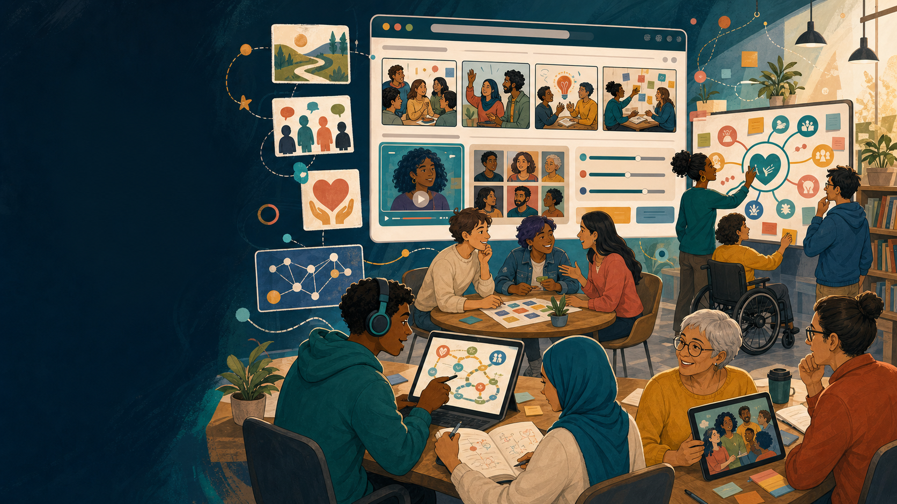
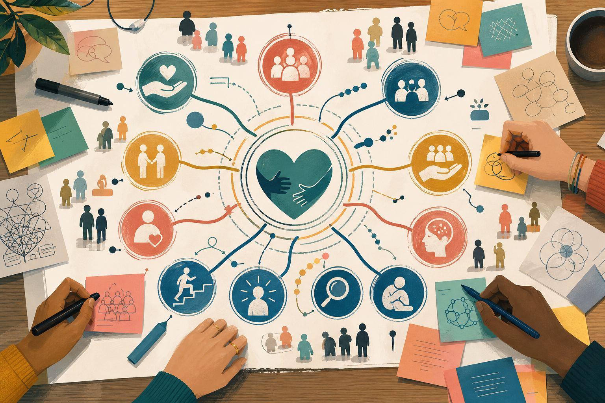
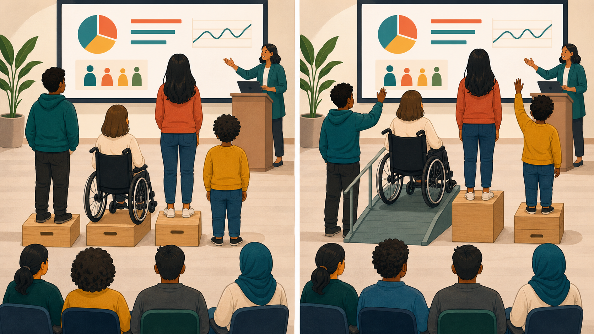
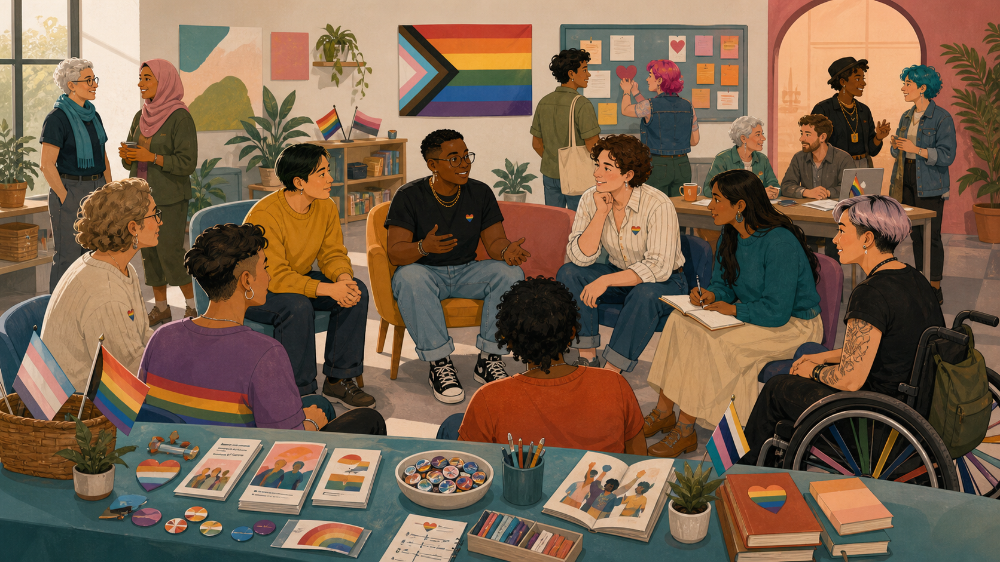
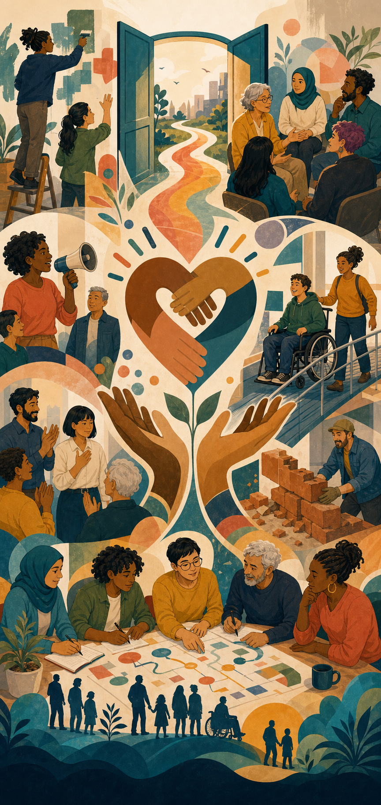
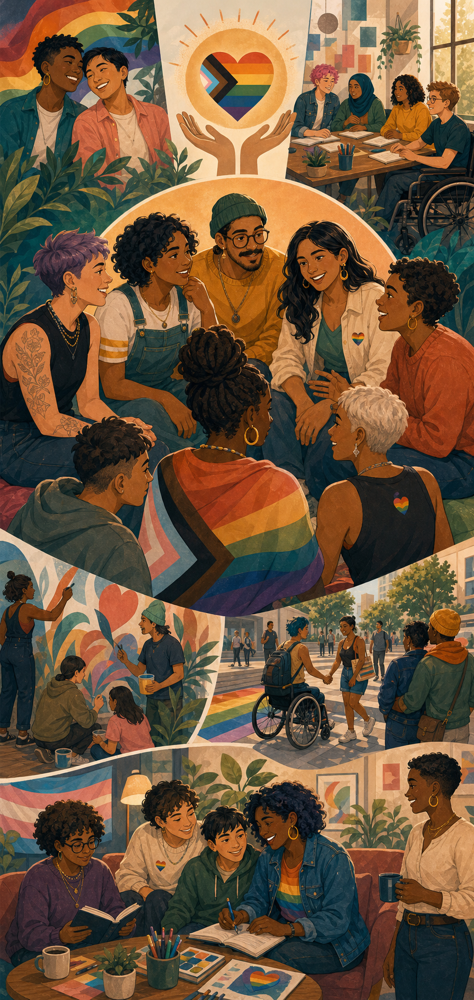
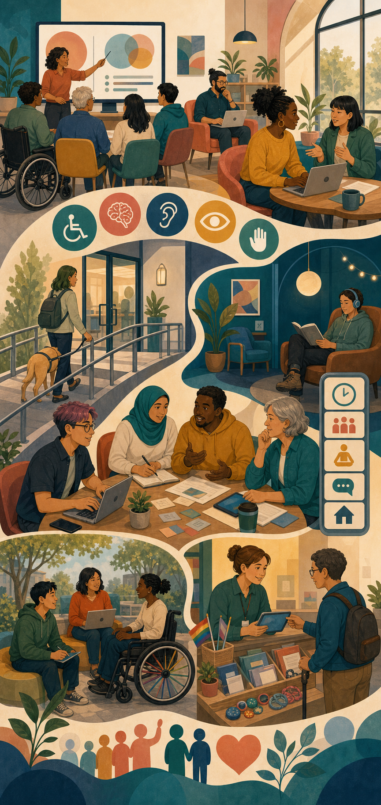
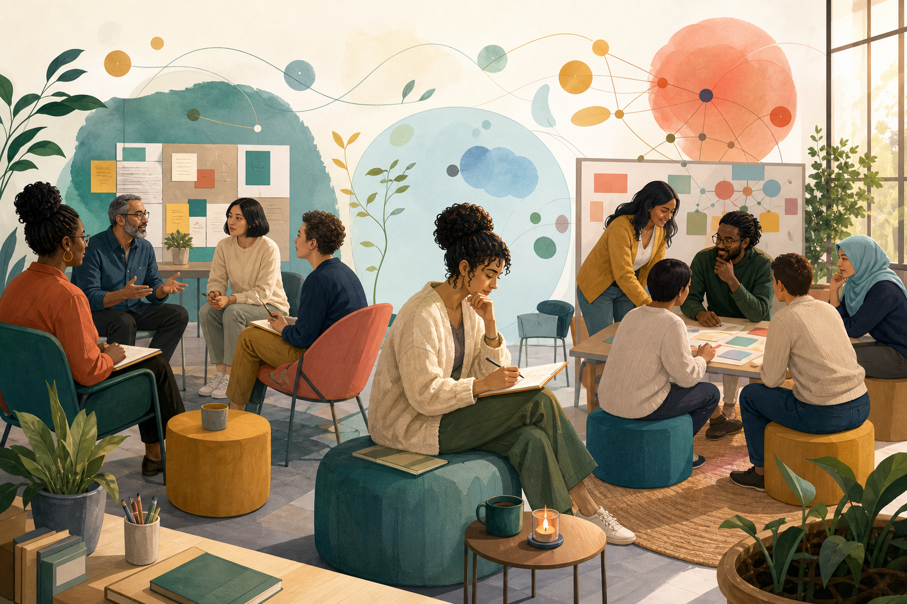
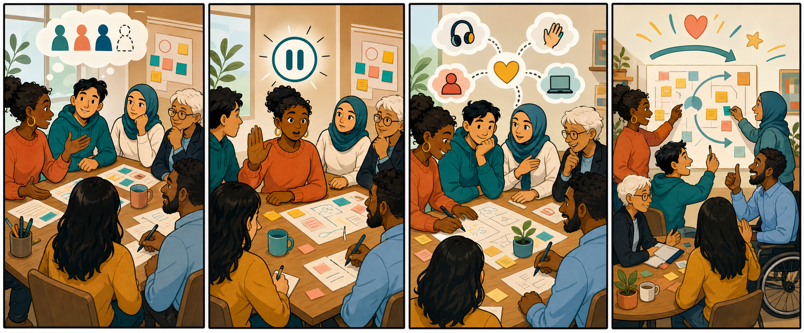
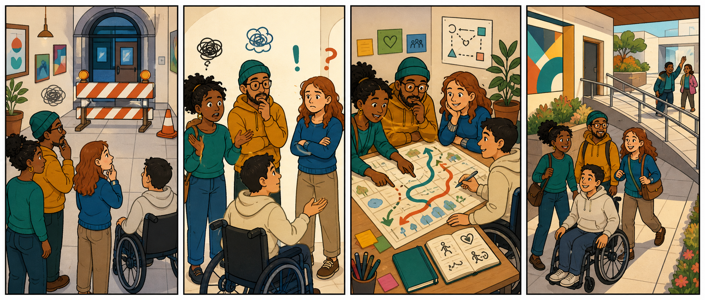

Shelter, care, and frontline systems
Shivangi's lens asks what DEI looks like when people are navigating homelessness, trauma, mental health, addictions, abuse, safety planning, and the daily realities of service systems.

An interactive unessay on equity, care, strategy, and lived experience
Our project explores DEI through two connected lenses: frontline shelter care and strategy/data systems. Together, they ask who gets access, who carries barriers, and how inclusion can be designed into real life.
Start here
Choose a lens. One opens a shelter door. The other lights up a dashboard. Both reveal the same DEI question: who is being asked to carry a barrier the system could remove?
Exclusion appears in intake forms, food access, privacy, crisis response, supply rooms, spiritual safety, and dignity.
Strategy lensExclusion appears in data gaps, product design, operations, access, resource flow, and who gets counted before decisions scale.
DEI is not only awareness, kindness, or a set of values. It is the practice of redesigning care, work, learning, and systems so people are not left to overcome barriers alone.
Start with the games to warm up shared language around access, care, trust, bias, and inclusive choices.
Move through the care lens and strategy lens to see how DEI changes when barriers are made visible in real systems.
Use the India and Canada voices as a listening circle across age, work, identity, community, and professional experience.
End with the course connections and final takeaway: inclusion becomes real when it changes design and practice.
Shivangi's lens asks what DEI looks like when people are navigating homelessness, trauma, mental health, addictions, abuse, safety planning, and the daily realities of service systems.
Vivek's lens asks what DEI looks like when leaders build products, dashboards, healthcare strategies, consulting spaces, volunteer programs, and systems that decide who gets access.
Play first
These quick activities introduce shared DEI language, then connect the care lens and strategy lens through barriers, access, and decision-making.
Word search
Click the letters of a word in order, then check it. Words may go across or down.
Find: EQUITY, CARE, TRUST, ACCESS, ALLY, and BIAS.
Mini crossword
Type the word that matches each clue. Use uppercase or lowercase.
Try the clues, then check your answers.
Sorting game
Click each action to sort it. The goal is not perfection; it is noticing what DEI looks like in behavior.
Click an action to begin.
Inclusive Scattergories
Use the letter and category to name an example. The goal is broad thinking, not perfect answers.
Cultural foods
Try a word that starts with the letter and fits the category.
Care Lens Bingo
Click squares that could shape whether someone can access care, shelter, planning, or safety with dignity.
Click three in a row to reveal how barriers can cluster.
Care + Strategy Scenario Cards
Draw a scenario from either the care lens or strategy lens, then choose the response that reduces barriers instead of shifting burden.
A resident misses an appointment after a difficult night.
Choose a response to see the inclusion effect.
Care lens
This section combines Shivangi's lived professional lens with the Behind the Door simulation. It connects DEI concepts to social support work, case management, union advocacy, shelter leadership, harm reduction, and trauma-informed access.
My lens
I came to this work through psychology, frontline social services, and community leadership. In shelter work, I saw how policies that look neutral on paper can feel impossible when someone is uninsured, traumatized, undocumented, exhausted, grieving, or simply not believed.
As a case manager and social support worker, I learned that equity is often quiet and practical: finding the right form, slowing down an intake, listening without stigma, making a referral that actually fits, or asking what safety means to the person in front of you.
As an interim shelter manager, I learned that inclusion also lives in operations: staffing models, risk protocols, healthcare partnerships, harm-reduction training, scheduling, and how leaders respond when fear enters the room.
Psychology gave me language for cognition, trauma, stigma, motivation, and trust. It taught me that people are rarely just "difficult"; they are often adapting to what systems have taught them to expect.
A service can exist and still feel unreachable. Forms, tone, timing, eligibility, cost, shame, and fear all shape whether someone can use support.
Housing stability, employment, healthcare, education, identity, and community all intersect. The plan that works is the one built with the person, not around them.
In high-risk moments, values are tested. Equity becomes protocols, staffing, training, communication, and whether staff and residents are treated with dignity under stress.
Business education helps me translate social impact into strategy, operations, partnerships, and sustainable change without losing the human story underneath.
Interactive story
Move through the mini shelter map. Each door opens a composite, anonymized moment from working with people experiencing mental health challenges, addictions, homelessness, abuse, poverty, and system barriers.
A person arrives guarded, tired, and frustrated. The easy assumption is non-compliance. A more equitable question is: what happened before they reached this door?
Strategy lens
This section connects Vivek Jain's strategy background to analytics, digital products, healthcare consulting, community impact, accessibility, and the leadership choices behind systems.
Vivek's lens
Vivek's experience brings a business and technology perspective to DEI, showing how strategy decisions shape who is seen, who is served, and whose barriers become visible through data.
This lens asks how inclusive leadership can show up in digital platforms, seller support, healthcare analytics, consulting spaces, volunteer programs, and accessible education.
Work on Tata Neu, Croma, seller hubs, help centers, and customer journeys connects DEI to usability, access, language, navigation, and whether people can actually use the systems meant for them.
NPS dashboards, feedback systems, segmentation, and targeting can make pain points visible. The DEI question is: whose feedback counts, and what changes because of it?
Pharma consulting and healthcare analytics connect to access, patient needs, provider outreach, and how data-driven decisions affect real people in health systems.
MDEIcal kits, blood donation camps, health screenings, educational kits, and volunteer coordination show DEI as action: reducing barriers and bringing support closer to communities.
Producing audiobooks for visually impaired students connects directly to accessibility, universal design, and the belief that learning should not depend on one format.
Leading analysts, mentoring juniors, building SOPs, and guiding consulting club members connects DEI to psychological safety, fair development, and who gets coached toward success.
Interactive strategy story
Move through strategy rooms inspired by product, analytics, healthcare, consulting, community work, and accessibility. Each room reveals the DEI question behind a business decision.
A seller dashboard is redesigned for speed, but smaller sellers are confused by jargon, navigation, and support flows. The overall engagement metric rises, but the new-user experience is uneven.
Inclusive Strategy Simulator
You are leading a product and analytics team. Engagement looks fine overall, but support tickets from newer sellers are rising.
Choose a strategy to see who benefits and who may still be left out.
Bias in the Dashboard
The dashboard looks successful. Click the hidden gaps that could change the DEI interpretation.
Click a metric to reveal the inclusion question hiding behind it.
When a leader builds a product, dashboard, healthcare strategy, or volunteer program, whose barriers are being measured, and whose are still invisible?
A day in my shoes
Choose a moment from my journey. Each choice reveals why inclusion is not just a policy; it is how people are treated when uncertainty, power, and pressure show up.
New country, new classroom
You understand the work, but not always the cultural shorthand, confidence codes, or unspoken expectations in the room.
Choose a response to reveal the DEI lesson.
What I wish people knew
These letters make the unessay more personal by speaking to the people and systems around inclusion.
Sometimes participation is shaped by confidence, accent, culture, trauma, money, or whether someone has been taught that their voice belongs. Inclusion begins when a classroom makes the hidden rules visible.
Your team will remember what you tolerate under pressure. Equity is not only who you hire; it is who feels safe enough to disagree, ask for support, and be believed.
You are not a problem to be managed. You are a person navigating systems, histories, losses, strengths, and hopes that may not be visible at the front desk.
NeDEIng help does not mean you are behind. It may mean the room was designed around assumptions you were never given the chance to learn.
What strategy taught me
These letters balance the frontline memoir by showing how inclusion also lives inside strategy, dashboards, product design, healthcare access, and leadership decisions.
A clean interface is not automatically an inclusive one. If only confident, digitally fluent users can navigate it, the design is still asking some people to work harder for the same access.
Dashboards can reveal barriers, but they can also hide them. Before trusting the average, ask whose feedback is missing, who could not respond, and which users disappeared before they were counted.
Efficiency matters, but equity asks a second question: are we reaching the people who are easiest to reach, or the people who face the greatest barriers to care?
Good strategy is not only clever. It is responsible. The best recommendation should explain who benefits, who carries the cost, and what voices need to be included before scaling the solution.
Humans of Smith
Inspired by Humans of New York, these short story cards are fictionalized composites. They protect privacy while making DEI feel human, local, and emotionally memorable.
The international student
I was translating the question, the accent, the expectation, and the fear of sounding less capable all at once. Inclusion looked like a professor naming the hidden rules and giving different ways to participate.
DEI lens: language access, belonging, cultural humility.The shelter resident
People kept asking about goals, but I was still sleeping with one eye open. Trauma-informed care meant someone slowed down, believed me, and helped me feel safe enough to choose my next step.
DEI lens: trauma, gender-based violence, dignity.The frontline worker
De-escalating a crisis, noticing overdose risk, documenting harm, holding boundaries, and still speaking with respect takes training and emotional labour. Equity includes the staff trying to keep people alive.
DEI lens: labour equity, psychological safety, respect.The person in recovery
When people saw addiction as a moral issue, I hid. When someone saw it as health, pain, survival, and context, I could be honest enough to ask for help.
DEI lens: harm reduction, stigma, access to care.The class teammate
The assignment became possible when options were flexible: written, spoken, visual, collaborative, or quiet. Accessibility did not lower the standard; it widened the doorway.
DEI lens: disability justice, universal design, flexibility.The future manager
It is a practice: asking who is missing, sharing power, documenting patterns, interrupting harm, and staying accountable after the meeting ends.
DEI lens: allyship, accountability, leadership.Voices across India and Canada
This section adds community voices from India and Canada: students, school educators, a school principal, a psychologist, a law professional, a shelter/city case manager, an ER nurse who is also an MBA student, a queer youth-support worker, a software engineer, and an MBA student with a supply chain background. Use the videos and audio as a listening circle: watch, listen, notice, connect, and reflect.
India voice 01 - student
This student perspective shows how young people understand fairness, respect, opportunity, and whether school feels like a place where their voice matters.
India voice 02 - school teacher
The teacher perspective connects DEI to daily classroom practice: who is encouraged, who is noticed, how difference is handled, and how care becomes part of learning.
India voice 03 - student
A second student voice helps show that young people are not a single group. Their views of DEI can differ based on school culture, confidence, access, identity, and lived experience.
India voice 04 - school principal
The principal perspective widens the lens from one classroom to the whole school: policies, expectations, safety, discipline, language, family engagement, and belonging.
India voice 05 - psychologist
The psychologist perspective adds a mental health lens to DEI: stigma, emotional safety, identity, family expectations, trauma, confidence, and whether people feel safe enough to ask for support before they reach crisis.
India voice 06 - law professional
The law professional perspective connects DEI to rights, dignity, representation, discrimination, access to justice, and how rules can either protect people or create barriers when systems are hard to understand or navigate.
Canada voice 01 - shelter and city case manager
This Canadian perspective connects DEI to frontline case management, shelter work, and city systems, where fairness often depends on access, documentation, safety, trauma-informed care, and how services respond to crisis.
Canada voice 02 - ER nurse and MBA student
This voice connects emergency nursing with MBA learning, bringing together healthcare access, patient dignity, teamwork, leadership, and the pressure of making equitable decisions in fast-moving environments.
Canada voice 03 - Toronto school teacher
This anonymous voice adds a Canadian school perspective from a 30-year-old woman working as a teacher in Toronto. It connects DEI to classroom belonging, student confidence, representation, language, family context, and how educators make safety visible in everyday interactions.
Canada voice 04 - queer youth-support worker
This voice adds the perspective of a gender-fluid queer person in Canada who works with young women in transition. Their response connects DEI to a lived question: how gender, sexuality, culture, race, religion, disability, or other parts of identity can shape work, safety, trust, and everyday life.
Canada voice 05 - software engineer
The software engineering perspective connects DEI to the choices built into technology: whose needs are considered, whose data is missing, whether tools are accessible, and how design decisions can either reduce or reproduce barriers.
Canada voice 06 - MBA student, supply chain background
This Canadian MBA voice adds a supply chain lens to DEI: how resources move, who is prioritized, who waits, whose needs are forecasted, and how planning decisions can either create access or deepen inequity.
Mind mapping
Inspired by bell hooks' framing of love as an active ethic, this map turns care into concrete behaviors: commitment, trust, responsibility, respect, and knowledge.

DEI learning lab
Use these tabs as a focused guide to equity, equality, allyship, accessibility, and the everyday design of belonging.
Equity notices barriers and adjusts resources, rules, and opportunities so people can participate meaningfully.
Diversity includes race, gender, sexuality, disability, class, language, religion, age, culture, migration, neurodiversity, and lived experience.
Inclusion means people are not just invited in; they can shape decisions, be safe enough to contribute, and see follow-through.
Equity vs equality
Equality gives everyone the same thing. Equity asks what each person needs to reach a fair chance of participation, safety, and success.
Did everyone receive the same resource?
Did the resource reduce the barrier?
Why does the barrier exist, and how can the system change?


LGBTQ+ inclusion
LGBTQ+ inclusion means people of all sexual orientations, gender identities, and gender expressions can participate without hiding, explaining, or defending who they are.
Global DEI
Globally, DEI is not one script. It changes across histories, laws, languages, migration, colonial contexts, disability access, gender norms, and local communities.
Ask what exclusion looks like here, who defines the problem, and which histories shape trust.
Across settings, people need safety, voice, fair access, accountable leadership, and resources matched to barriers.
Avoid exporting one model. Learn from community-led approaches and adapt with people, not for them.

Use intersectionality to ask how race, gender, sexuality, disability, class, migration, language, and age interact in real settings.
The IDEA toolkit highlights explicit and implicit bias, affinity bias, stereotypes, groupthink, and discrimination as barriers to fair participation.
The WISEST toolkit connects DEI learning to representation, underrepresentation, and the importance of showing girls and gender minorities that STEM can be for them.
Pick one DEI barrier, summarize evidence for why it matters, then design one small intervention and one way to evaluate whether it worked.
From Berkeley's anti-racism mDEIa list, films such as 13th, I Am Not Your Negro, and The Death and Life of Marsha P. Johnson can open discussion about systems, history, identity, and justice.
Podcasts like Code Switch, All My Relations, Who Belongs, and Seeing White invite ongoing learning through conversation, history, and lived experience.
Instead of quoting long dialogue, analyze a short scene: who has power, who is believed, who is interrupted, what barrier is invisible, and what repair is possible?
MDEIa list inspired by Berkeley Executive Education anti-racism resources: films, videos, and podcasts.
Toolkit idea: complete training, learn shared definitions, and understand how bias, discrimination, stereotypes, racism, and groupthink shape everyday decisions.
Being empathetic means listening for what people are carrying: exclusion, extra emotional labour, repeated interruptions, name bias, accent bias, or pressure to represent a whole group.
Advocacy can mean improving outreach, removing gendered language, sharing mentoring labour, checking workload, and making sure historically excluded people are not only included symbolically.
Allyship is measured by changed conditions: safer reporting paths, accessible participation, fairer evaluation, and repeat scans when leadership, staffing, or programs change.
Share agendas, location details, timing, cost, sensory conditions, and ways to request accommodations.
Use captions, plain language, breaks, multiple ways to participate, and visible norms for respectful dialogue.
Send notes, invite feedback, compensate lived expertise when possible, and show what changed.
Review words, examples, images, job posts, letters, and evaluation forms for stereotypes, assumptions, gendered language, and missing voices.
Map who has authority, who has lived expertise, who carries risk, who gets interrupted, and who gets informed last.
Look for cost, time, paperwork, language, technology, transportation, stigma, and safety barriers.
Watch for tokenism and unequal service work. Share committee, mentoring, emotional, and educational labour fairly.
Poster wall
A smaller gallery keeps the page visual without making it feel like a separate museum. Each poster gives one conversation starter.

Reflection: What power, access, or crDEIbility can you use to reduce someone else's burden?

Reflection: What signals tell people they can be safe without having to test the room first?

Reflection: What could be made easier before someone has to ask for an accommodation?
Reflection: What changes when inclusion is designed with community knowledge instead of imported as a template?
Reflection: Where are we giving everyone the same thing when barriers are different?
Reflection: Which small actions make respect visible before harm happens?
Evidence + course connection
This project uses the freedom of an unessay to make DEI active, memorable, and accessible. The format is part of the claim: inclusion is learned through listening, interaction, reflection, and design.
The site translates care, commitment, trust, responsibility, respect, and knowledge into decisions: how we respond to crisis, design access, listen to harm, and repair exclusion.
Aspiration, self-awareness, curiosity, and vulnerability appear throughout the project: games invite entry, simulations test assumptions, and voices require the viewer to listen before judging.
Ideas from the DEI toolkits show up as plain-language tools: accessibility checks, representation questions, allyship moves, inclusive language, power mapping, and barrier-focused design.
Shivangi's frontline care lens and Vivek's strategy lens show that DEI belongs both in human service encounters and in the systems, dashboards, operations, and policies behind them.
DEI scan
Use this as a quick pulse check for a meeting, class activity, community program, or team conversation.

Name why the learning matters before asking people to stretch.
Notice defensiveness, expertise gaps, power, and the stories you bring into the room.
Ask better questions before moving to judgment, advice, or correction.
Make uncertainty discussable so learning can happen without performance.
Choose your role
Pick a role to see a tailored pathway. This makes the unessay useful for students, educators, managers, allies, and community workers.
Student
Students can practice DEI by noticing who is included in examples, whose voices shape group work, and how classmates are supported when they name barriers.
Three ally moves
Instead of another large toolkit, this section turns allyship into three repeatable moves that work across classrooms, shelters, healthcare, product teams, and leadership spaces.
Look for hidden barriers in forms, classrooms, shelter rules, dashboards, meetings, healthcare pathways, language, timing, and access to support.
Change the process, share information, add options, explain jargon, improve accessibility, invite missing voices, and make the fix structural instead of personal.
Listen for impact, acknowledge patterns, act without making the harmed person educate everyone, and show what changed because feedback was trusted.
Build a 3-step allyship plan
So what?
Across shelter work, healthcare, classrooms, product strategy, dashboards, operations, law, technology, and community voices, the same question keeps returning: are people being asked to overcome invisible barriers alone?
Care becomes DEI when it changes rules, routines, access points, safety practices, and how people are treated when they are under pressure.
Dashboards, surveys, and feedback systems only support equity when they ask who could not respond, who left early, and who was never counted.
The real test is whether people with different identities, barriers, roles, and histories can access the system with dignity and choice.
Our learning is that DEI becomes real when love is practiced as responsibility and strategy is practiced as accountability. A classroom, shelter, dashboard, hospital, workplace, or supply chain is not inclusive because it says the right words. It becomes inclusive when people can enter, participate, ask for help, and be treated with dignity without having to prove they deserve access first.
This website uses plain language, visible contrast, keyboard-accessible links and buttons, descriptive alt text, mDEIa takeaways, and multiple ways to engage: watching, listening, reading, playing, and reflecting.
Watch + play
Cartoons, clips, comics, and one puzzle keep the tone playful while leaving the main focus on the personal DEI journey.
Empathy practice
Use this as a quick opener for care, listening, and psychological safety.
Inclusion at work
An animated way to discuss assimilation, belonging, and what teams ask people to hide.
Change + adaptation
Use this clip as a light way into change, resistance, curiosity, and fairness.
Younger audiences
For younger groups, choose a gentle clip about fairness, emotions, friendship, or speaking up.

What changed when the team treated silence as information instead of disengagement?

When change happens, who gets a map, time, support, and permission to ask questions?
Mini game
A workshop starts, but one participant has not spoken and another keeps getting interrupted.
Choose an action to see the equity effect.
Match game
Pick a value and see what it looks like as a behavior.
Choose a value to translate it into action.
Word search
Click the letters of a word in order, then check it. Words may go across or down.
Find: EQUITY, CARE, TRUST, ACCESS, ALLY, and BIAS.
Mini crossword
Type the word that matches each clue. Use uppercase or lowercase.
Try the clues, then check your answers.
Sorting game
Click each action to sort it. The goal is not perfection; it is noticing what DEI looks like in behavior.
Click an action to begin.
Interactive tools
Each tool is designed for quick use in meetings, program design, supervision, or community engagement.
Access check
Review a policy, event, intake process, or team decision through barriers people might face before they ever arrive.
Topic library
Filter by theme to find short explanations and practical next steps.
Harm reduction
Psychological safety
Access gaps
Conflict repair
Economic empowerment
Inclusive programming
Scenario practice
Use these prompts for workshops, student clubs, frontline teams, or leadership reflection.
Workplace equity
The change improved coverage, but several employees are quietly swapping shifts and one has stopped volunteering for extra duties.
Whose constraints were invisible when this decision was made?
Look for the operational win and the equity cost at the same time. A strong response keeps coverage goals while adding transparent exceptions, caregiver input, and a review date.
Action builder
Pick one focus, one practice, and one way to measure whether it helped.
Reflection journal
Use this as a final page, class discussion prompt, or personal takeaway.
What assumption did I notice in myself while exploring this site?
This unessay connects DEI to psychology, housing justice, harm reduction, social impact, and inclusive leadership. The format matters because DEI is relational: people learn by noticing, feeling, discussing, choosing, and repairing.
What is one barrier I can help reduce this week, and who should be part of deciding how?